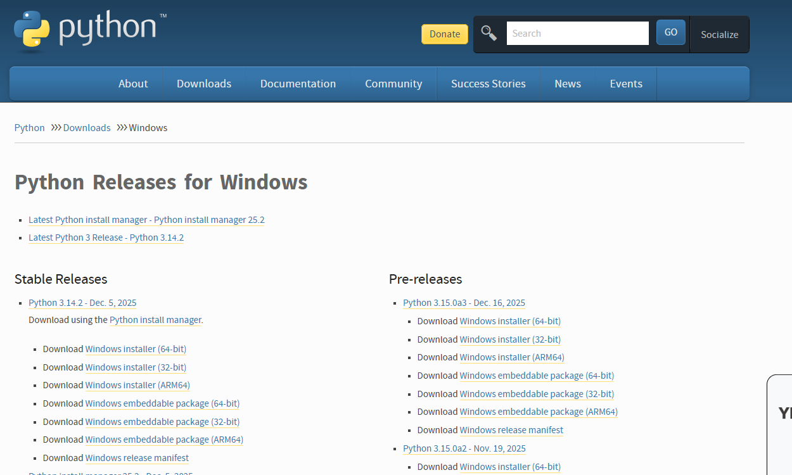
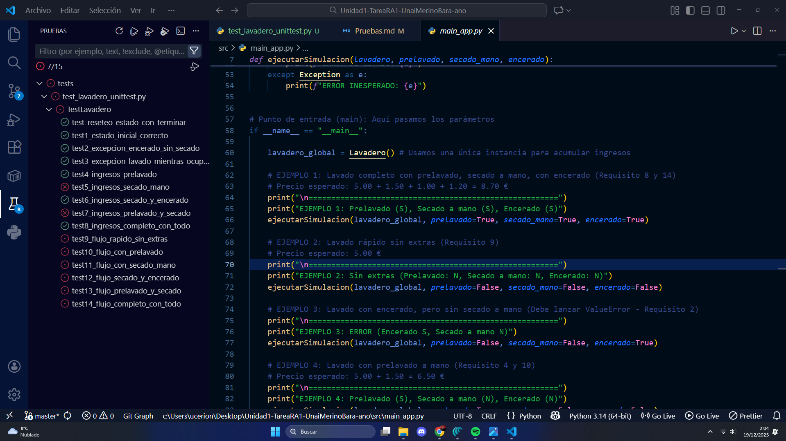
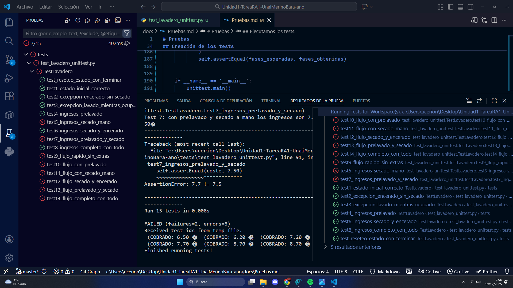
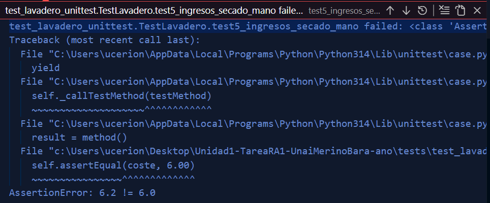
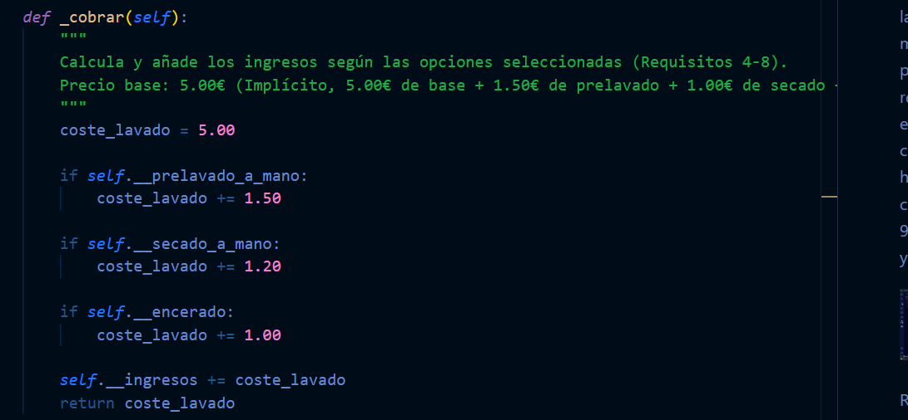
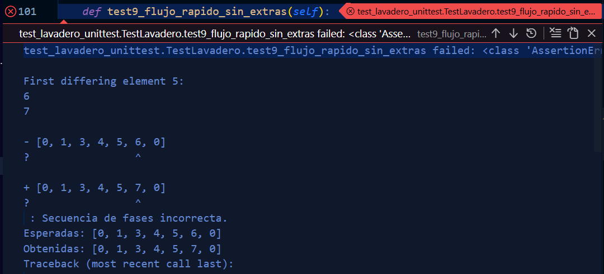
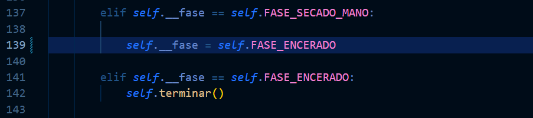
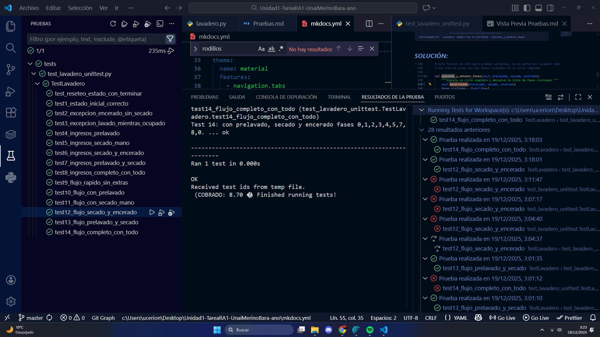

Pruebas
En este apartado vamos a realizar un análisis lógico del programa con base en una serie de pruebas partiendo de las siguientes premisas:
-
Cuando se crea un lavadero, éste no tiene ingresos, no está ocupado, está en fase 0 y todas las opciones de lavado (prelavado a mano, secado a mano y encerado) están puestas a false.
-
Cuando se intenta comprar un lavado con encerado pero sin secado a mano, se produce una ValueError.
-
Cuando se intenta hacer un lavado mientras que otro ya está en marcha, se produce una ValueError.
-
Si seleccionamos un lavado con prelavado a mano, los ingresos de lavadero son 6,50€.
-
Si seleccionamos un lavado con secado a mano, los ingresos son 6,00€.
-
Si seleccionamos un lavado con secado a mano y encerado, los ingresos son 7,20€.
-
Si seleccionamos un lavado con prelavado a mano y secado a mano, los ingresos son 7,50€.
-
Si seleccionamos un lavado con prelavado a mano, secado a mano y encerado, los ingresos son 8,70€.
-
Si seleccionamos un lavado sin extras y vamos avanzando fases, el lavadero pasa por las fases 0, 1, 3, 4, 5, 6, 0.
-
Si seleccionamos un lavado con prelavado a mano y vamos avanzando fases, el lavadero pasa por las fases 0, 1, 2, 3, 4, 5, 6, 0.
-
Si seleccionamos un lavado con secado a mano y vamos avanzando fases, el lavadero pasa por las fases 0, 1, 3, 4, 5, 7, 0.12.
-
Si seleccionamos un lavado con secado a mano y encerado y vamos avanzando fases, el lavadero pasa por las fases 0, 1, 3, 4, 5, 7, 8, 0.
-
Si seleccionamos un lavado con prelavado a mano y secado a mano y vamos avanzando fases, el lavadero pasa por las fases 0, 1, 2, 3, 4, 5, 7, 0.
-
Si seleccionamos un lavado con prelavado a mano, secado a mano y encerado y vamos avanzando fases, el lavadero pasa por las fases 0, 1, 2, 3, 4, 5, 7, 8, 0.
Creación de los tests
Para ello completaremos nuestro archivo de tests siguiendo las consignas superiores.
Es importante declarar el tipo de test y vincular bien este fichero para que no tengamos problemas a la hora de correr los tests.
import unittest
from src.lavadero import Lavadero
class TestLavadero(unittest.TestCase):
def setUp(self):
"""Prepara una nueva instancia de Lavadero antes de cada prueba."""
self.lavadero = Lavadero()
# ----------------------------------------------------------------------
# Test 4 del enunciado (reseteo)
# ----------------------------------------------------------------------
def test_reseteo_estado_con_terminar(self):
"""Test 4 extra: Verifica que terminar() resetea flags y fase pero mantiene ingresos."""
# Iniciar un lavado cualquiera
self.lavadero.hacerLavado(True, True, True)
# Avanzar al menos una fase para que cobre
self.lavadero.avanzarFase()
self.assertTrue(self.lavadero.ingresos > 0)
# Terminar manualmente
self.lavadero.terminar()
self.assertEqual(self.lavadero.fase, Lavadero.FASE_INACTIVO)
self.assertFalse(self.lavadero.ocupado)
self.assertFalse(self.lavadero.prelavado_a_mano)
self.assertFalse(self.lavadero.secado_a_mano)
self.assertFalse(self.lavadero.encerado)
# Los ingresos se mantienen
self.assertTrue(self.lavadero.ingresos > 0)
# ----------------------------------------------------------------------
# TESTS 1–3: reglas básicas / excepciones
# ----------------------------------------------------------------------
def test1_estado_inicial_correcto(self):
"""Test 1: estado inicial sin ingresos, fase 0, no ocupado y opciones a False."""
self.assertEqual(self.lavadero.fase, Lavadero.FASE_INACTIVO)
self.assertEqual(self.lavadero.ingresos, 0.0)
self.assertFalse(self.lavadero.ocupado)
self.assertFalse(self.lavadero.prelavado_a_mano)
self.assertFalse(self.lavadero.secado_a_mano)
self.assertFalse(self.lavadero.encerado)
def test2_excepcion_encerado_sin_secado(self):
"""Test 2: encerar sin secado a mano lanza ValueError."""
with self.assertRaises(ValueError):
self.lavadero.hacerLavado(prelavado_a_mano=False,
secado_a_mano=False,
encerado=True)
def test3_excepcion_lavado_mientras_ocupado(self):
"""Test 3: iniciar un segundo lavado mientras está ocupado lanza RuntimeError."""
self.lavadero.hacerLavado(False, False, False)
# Sin terminar el primero, intentamos iniciar otro
with self.assertRaises(RuntimeError):
self.lavadero.hacerLavado(True, False, False)
# ----------------------------------------------------------------------
# TESTS 4–8: ingresos según combinación de opciones
# (usamos una nueva instancia por test gracias a setUp)
# ----------------------------------------------------------------------
def _cobrar_lavado(self, prelavado, secado, encerado):
"""Helper: inicia un lavado con opciones y avanza una fase para que cobre."""
self.lavadero.hacerLavado(prelavado, secado, encerado)
ingresos_antes = self.lavadero.ingresos
self.lavadero.avanzarFase() # 0 -> 1 y llama a _cobrar()
ingresos_despues = self.lavadero.ingresos
return round(ingresos_despues - ingresos_antes, 2)
def test4_ingresos_prelavado(self):
"""Test 4 consigna: con prelavado a mano los ingresos son 6.50€."""
coste = self._cobrar_lavado(prelavado=True, secado=False, encerado=False)
self.assertEqual(coste, 6.50)
def test5_ingresos_secado_mano(self):
"""Test 5: con secado a mano los ingresos son 6.00€."""
coste = self._cobrar_lavado(prelavado=False, secado=True, encerado=False)
self.assertEqual(coste, 6.00)
def test6_ingresos_secado_y_encerado(self):
"""Test 6: con secado a mano y encerado los ingresos son 7.20€."""
coste = self._cobrar_lavado(prelavado=False, secado=True, encerado=True)
self.assertEqual(coste, 7.20)
def test7_ingresos_prelavado_y_secado(self):
"""Test 7: con prelavado y secado a mano los ingresos son 7.50€."""
coste = self._cobrar_lavado(prelavado=True, secado=True, encerado=False)
self.assertEqual(coste, 7.50)
def test8_ingresos_completo_con_todo(self):
"""Test 8: con prelavado, secado a mano y encerado los ingresos son 8.70€."""
coste = self._cobrar_lavado(prelavado=True, secado=True, encerado=True)
self.assertEqual(coste, 8.70)
# ----------------------------------------------------------------------
# TESTS 9–14: flujo de fases usando ejecutar_y_obtener_fases
# ----------------------------------------------------------------------
def test9_flujo_rapido_sin_extras(self):
"""Test 9: fases 0,1,3,4,5,6,0 sin extras."""
fases_esperadas = [0, 1, 3, 4, 5, 6, 0]
fases_obtenidas = self.lavadero.ejecutar_y_obtener_fases(
prelavado=False, secado=False, encerado=False
)
self.assertEqual(
fases_esperadas, fases_obtenidas,
f"Secuencia de fases incorrecta.\nEsperadas: {fases_esperadas}\nObtenidas: {fases_obtenidas}"
)
def test10_flujo_con_prelavado(self):
"""Test 10: con prelavado fases 0,1,2,3,4,5,6,0."""
fases_esperadas = [0, 1, 2, 3, 4, 5, 6, 0]
fases_obtenidas = self.lavadero.ejecutar_y_obtener_fases(
prelavado=True, secado=False, encerado=False
)
self.assertEqual(fases_esperadas, fases_obtenidas)
def test11_flujo_con_secado_mano(self):
"""Test 11: con secado a mano fases 0,1,3,4,5,7,0."""
fases_esperadas = [0, 1, 3, 4, 5, 7, 0]
fases_obtenidas = self.lavadero.ejecutar_y_obtener_fases(
prelavado=False, secado=True, encerado=False
)
self.assertEqual(fases_esperadas, fases_obtenidas)
def test12_flujo_secado_y_encerado(self):
"""Test 12: con secado a mano y encerado fases 0,1,3,4,5,7,8,0."""
fases_esperadas = [0, 1, 3, 4, 5, 7, 8, 0]
fases_obtenidas = self.lavadero.ejecutar_y_obtener_fases(
prelavado=False, secado=True, encerado=True
)
self.assertEqual(fases_esperadas, fases_obtenidas)
def test13_flujo_prelavado_y_secado(self):
"""Test 13: con prelavado y secado fases 0,1,2,3,4,5,7,0."""
fases_esperadas = [0, 1, 2, 3, 4, 5, 7, 0]
fases_obtenidas = self.lavadero.ejecutar_y_obtener_fases(
prelavado=True, secado=True, encerado=False
)
self.assertEqual(fases_esperadas, fases_obtenidas)
def test14_flujo_completo_con_todo(self):
"""Test 14: con prelavado, secado y encerado fases 0,1,2,3,4,5,7,8,0."""
fases_esperadas = [0, 1, 2, 3, 4, 5, 7, 8, 0]
fases_obtenidas = self.lavadero.ejecutar_y_obtener_fases(
prelavado=True, secado=True, encerado=True
)
self.assertEqual(fases_esperadas, fases_obtenidas)
if __name__ == '__main__':
unittest.main()
Ejecutamos los tests.
Antes de nada, es necesario instalar un intérprete de Python, para ello descargaremos una versión estable en nuestra máquina y activaremos la opción de Path.

Después de añadir el intérprete, emplearemos el paquete de plugins oficial de python para VS-Code centrando nuestra atención en el icono del matraz.
Pasos de configuración Icono Matraz -> tipo de test (unittest) -> directorio de pruebas (tests) -> terminación (test_*.py)
Se nos generará una carpeta .vscode donde se guardará la configuración de búsqueda de pruebas y otro directorio _pycashe_ dentro de tests donde se gurdarán las pruebas. Tras ello, nos aparecerán las pruebas en el listado del apartado pruebas.

Al darle al Play se nos ejecutarán todas las pruebas, mostrando en pantalla el resultado de estas, en nuestro caso vemos que han fallado las consignas, 5, 7, 9, 10, 11, 12, 13 y 14.

Revisaremos cada una de ellas para sanear los resultados.
Ajustes de código.
Abordaremos cada caso por separado y siguiendo el mismo formato.
Fallo de prueba 5 (la solución arregla la 7)
Diagnóstico: Fallo de cálculo imprevisto. (6.20 != 6.00) 
SOLUCIÓN: 
Según las intenciones del comentario de deste método de cobro, el precio de secado a mano y encerado está invertido, lo que causa este problema de cálculo en la combinació de la prueba 5 y 7.
Fallo de prueba 9 (la solución arregla la 10 ,11 y 13)
Diagnóstico: Método inexistente.

SOLUCIÓN:

El método estaba fuera de la clase,la solución es tabular el método para incluirlo en la clase y un error ortográfico en un parámetro.
_hacer_lavado(...) -> hacerLavado(...)
Tras corregir este error, nos topamos con otro contiguo...
Diagnóstico: Obtención de secuencias de fase dispareja.

SOLUCIÓN:

En el método de avanzar fase, debemos de intercambiar los valores de intercambio de fase en el if-else al acabar la fase de rodillos(5), en el caso de que secado a mano sea true, la fase siguiente ha de ser secado a mano(6), si no secado automático(7).
Fallo de prueba 12 (la solución arregla la 14)
Diagnóstico: Lista obtenida no coincidente con al esperada. (Falta la fase 8)

SOLUCIÓN: 
El if que detecta si la fase es secado a mano(7) hace que finalice las fases, en su lugar, debe de cambiar la fase a la de encerado(8).
Cambiar el contenido del if de: self.terminar() -> self.__fase = self.FASE_ENCERADO.
RESULTADO FINAL:

Finalmente todas las pruebas quedan superadas.